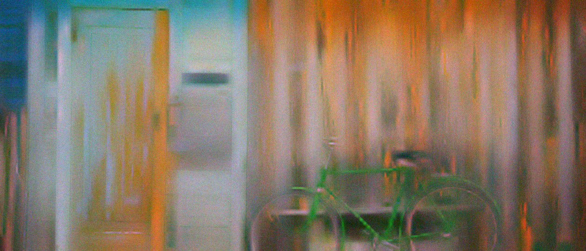
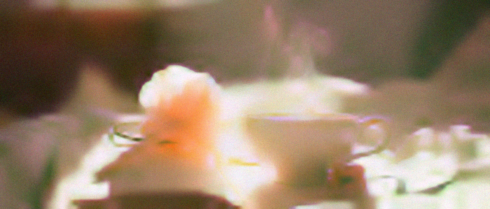
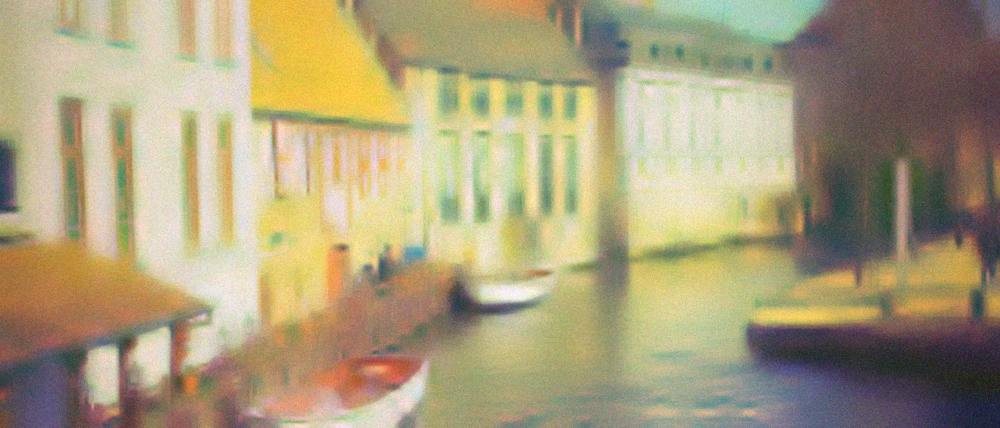

Mother Tongue
v2 Night radio · iPhone for Sofía · the Hearth for Rosa
01 Archive home
9:41
Tuned to
Abuela RosaSat 7:12

Los tamales de mamá
Mama's tamales · new tonight




SUNMONTUEWEDTHUFRISAT
02 Story playback
9:41
Sat · Rosa
Los tamales de mamá
Every Christmas my mother woke us at five to spread the masa. The whole house smelled of corn and smoke.
Hear her original1:12 / 2:40
03 Reply, recording
9:41
Answering Rosa
Los tamales de mamáWho taught your mother to make them?
What did the kitchen sound like?
0:14
Let go to send
She will hear you in Spanish,
in your own voice.
04 Hearth, idle
7:12
sábado
24 de octubre
24 de octubre
05 Hearth, new story waiting
Sofía
te mandó una respuesta
7:40
05b Hearth, playing
Abuela, ¿quién le enseñó a tu mamá?